El sistema motor
Objetivos de aprendizaje
Al terminar este capítulo, vas a comprender:
- la organización de las regiones centrales y de las vías que participan en el control motor;
- la función de distintas regiones en la organización y el control del movimiento;
- que los sistemas motores se modifican durante el desarrollo y con el aprendizaje;
- cómo se desorganizan los sistemas motores cuando se lesiona alguno de sus componentes.
El movimiento es clave en todos los aspectos de la vida. Desde respirar hasta caminar, escribir o fruncir el ceño, cada conducta está controlada por el sistema motor. Por eso, entender cómo se genera el movimiento es un paso importante para entender la conducta.
Aunque nos resulta tan «natural», generar un movimiento es una tarea muy compleja. Según el objetivo, el encéfalo calcula la información actual y la que tiene almacenada para producir instrucciones y órdenes que se transforman en movimiento. Esa transformación ocurre en la unión neuromuscular, donde una neurona motora hace sinapsis con un músculo y gobierna su estado de contracción. Para entender cómo se generan los movimientos intencionales, entonces, hay que entender cómo se organiza el sistema nervioso y cómo se comunican distintas regiones para controlar la secuencia correcta de contracción de cientos de músculos, que van a producir el movimiento adecuado.
En este capítulo vamos a ver cómo los estudios revelaron la relación entre la organización cortical y la función en el control del movimiento voluntario. Vamos a mirar cómo la médula espinal, que contiene las neuronas motoras, es algo más que un relevo pasivo de la información del encéfalo hacia la contracción muscular. Por último, vamos a evaluar la función del cerebelo y de los núcleos basales en la organización del movimiento. Sobre la marcha, vamos a comentar cómo los sistemas motores se modifican durante el desarrollo y el aprendizaje. También vamos a ver qué ocurre cuando se lesionan ciertos componentes, y cómo los tratamientos, o la capacidad de ciertas regiones de cambiar (la plasticidad), pueden ayudar a la recuperación.
Organización del sistema motor
Los sistemas motores cumplen varias funciones. Participan en el desplazamiento por el mundo y en su manipulación, y también en la comunicación verbal y no verbal (los gestos). Nos permiten mantener la postura y el equilibrio, y controlan la contracción de los músculos lisos que intervienen en funciones autónomas, como la respiración y los movimientos del intestino. Por último, participan en la sensación: por ejemplo, controlan los movimientos sacádicos de los ojos cuando seguimos un estímulo con la vista. Pese a la diversidad de movimientos que hacemos, el control motor suele considerarse simple, probablemente porque los movimientos parecen realizarse sin esfuerzo y, en gran medida, sin conciencia. Sin embargo, incluso los movimientos simples exigen cálculos considerables para coordinar la acción de varios músculos.
Por ejemplo, imaginá que querés agarrar un durazno maduro (Figura 5.1). Ese movimiento exige la acción concertada de varias regiones del sistema nervioso, cada una con una función específica. Una vez que decidiste agarrar el durazno, la información visual procesada en la corteza visual sirve para localizar la fruta. Esa información se transmite a las regiones motoras del lóbulo frontal, donde se planifica el movimiento y se envían las señales de orden. Las órdenes siguen hacia la médula espinal, que se encarga de generar el movimiento mediante la activación de neuronas motoras. La actividad coordinada de esas neuronas induce la contracción y la relajación de los músculos del brazo y de la mano, y así se puede tomar el durazno. Un durazno maduro es una fruta muy delicada, y hay que aplicar la presión justa para desprenderla sin lastimarla. Los receptores sensitivos de los dedos reenvían información táctil y propioceptiva a la médula espinal y a la corteza somatosensitiva. Desde allí, la información llega a la corteza motora para confirmar que estás tomando la fruta. Otras áreas participan durante este movimiento: los núcleos basales estiman la fuerza de la prensión, y el cerebelo ayuda a regular el momento y la precisión del movimiento.
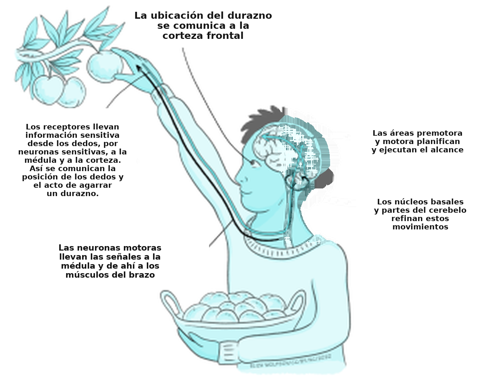
La jerarquía motora
En el diagrama de interacciones entre distintas regiones del sistema nervioso que acabamos de describir (Figura 5.1), cada componente controla una función particular. Esas regiones se organizan de manera jerárquica.
Las regiones del prosencéfalo, que intervienen en la decisión, ordenan a áreas funcionales inferiores, como la médula espinal, que ejecuten el movimiento. El procesamiento en paralelo nos permite producir al mismo tiempo otros movimientos, como mantener la postura mientras cantamos o caminamos. Por último, estas áreas del encéfalo tienen cierto grado de independencia: pueden coordinar una actividad compleja en varios grupos musculares después de recibir órdenes relativamente generales. Así, el movimiento ocurre con rapidez, con precisión y sin control consciente.
Estrategias para controlar el movimiento
Desde hace bastante tiempo se discute la idea de cómo se controla el movimiento para que sea eficiente. Cuando ejecutamos una acción, la información sensitiva nos informa sobre el movimiento, la posición del cuerpo y el entorno.
Esa información puede procesarse mientras el movimiento avanza, y así podemos ajustarlo. Esto se llama control por retroalimentación: la salida es vigilada por varios sistemas sensitivos, y las señales se reenvían al sistema nervioso central (SNC) para informar a las regiones que generan las salidas motoras.
Sin embargo, este modelo se limita a los movimientos lentos y a las acciones secuenciales, porque el procesamiento de la retroalimentación sensitiva es relativamente lento. Por ejemplo, al atrapar una pelota puede llevar 700 milisegundos responder a las claves visuales, pero el movimiento solo dura entre 150 y 200 ms. Eso significa que, para los movimientos rápidos y balísticos, tiene que usarse otro mecanismo de control motor.
En el control anticipatorio (feedforward en inglés), el movimiento óptimo se predice a partir de las condiciones sensitivas actuales y de la memoria de estrategias anteriores. Por ejemplo, si abrís la puerta de tu casa y ves nieve y hielo, vas a caminar de otra manera que en un día soleado: vas a dar pasos cortos, caminar despacio y abrir los brazos para equilibrarte, porque sabés que hay riesgo de resbalar y caer. Si volvemos al ejemplo de la pelota, conocer las condiciones iniciales del brazo y de la mano, y poder predecir la trayectoria de la pelota, sirve para elegir un programa motor almacenado y atraparla. Un rasgo general del control anticipatorio es que mejora con el aprendizaje.
El control por retroalimentación y el anticipatorio no se excluyen: se combinan para generar, de la mejor manera posible, movimientos coordinados.
Para entender cómo trabajan juntas las regiones del sistema nervioso central al planificar y ordenar los movimientos, ahora vamos a analizar la función de las regiones principales, empezando por el prosencéfalo.
Ideas clave
- Los sistemas motores cumplen varias funciones.
- Los sistemas motores están formados por varias regiones organizadas de manera jerárquica.
- Los sistemas motores y los sensitivos trabajan juntos para generar un movimiento eficaz.
El prosencéfalo y el inicio del movimiento
En los lóbulos frontales del cerebro, regiones específicas como la corteza prefrontal, la corteza premotora y la corteza motora primaria contribuyen al movimiento de maneras distintas.
La corteza prefrontal es decisiva para decidir ejecutar una acción determinada. Por ejemplo, si decidís agarrar el celular para llamar a una amistad, es la corteza frontal la que reacciona a ese objetivo e instruye al sistema motor para que inicie el movimiento. La corteza premotora recibe información de la corteza prefrontal y prepara las secuencias motoras necesarias: selecciona los movimientos más apropiados para la acción en las circunstancias actuales. En este caso, vas a tener que tomar el teléfono y desbloquearlo con una clave, moviendo los dedos de un número a otro en una secuencia organizada y siguiendo una memoria específica. La información sobre la secuencia motora que hay que ejecutar se transmite a la corteza motora primaria, que produce los movimientos necesarios mediante la contracción y la relajación muscular. La entrada sensitiva de la corteza parietal posterior, por ejemplo sobre dónde están el teléfono y los dedos, también da forma a este proceso.
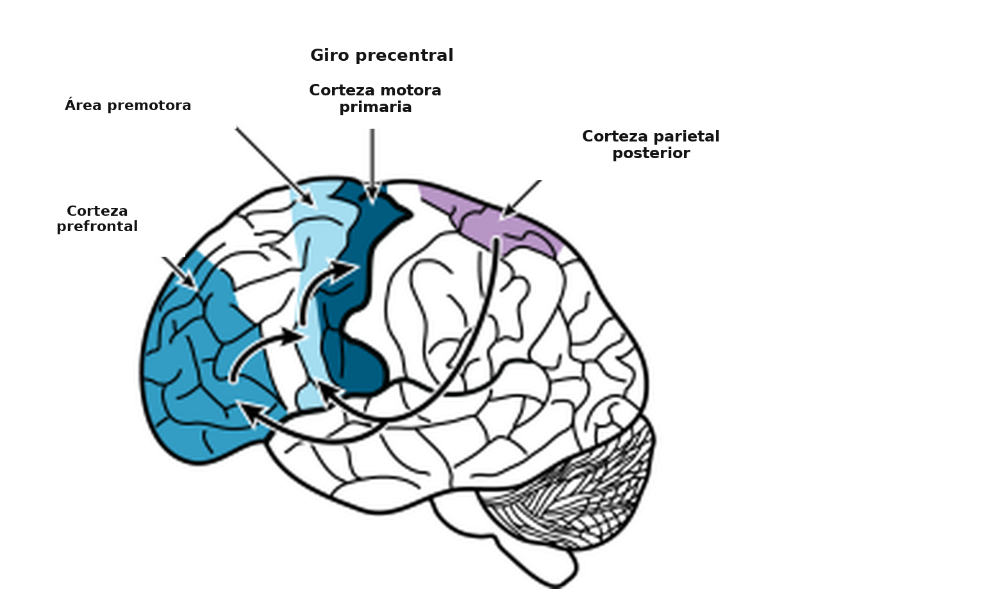
La corteza motora
La evidencia sobre la organización de la corteza motora influyó mucho en cómo se piensa su función. Wilder Penfield fue un neurólogo que inició la neurocirugía para tratar la epilepsia que no se podía controlar con medicación. Mediante intervenciones quirúrgicas, extirpaba las regiones del encéfalo en las que se originaba la crisis. Para evitar consecuencias catastróficas, durante la cirugía estimulaba eléctricamente regiones locales del sistema nervioso en pacientes despiertos y registraba los resultados. Encontró que distintas partes de la corteza motora primaria controlaban distintos músculos (Figura 5.3) (Penfield & Boldrey, 1937).
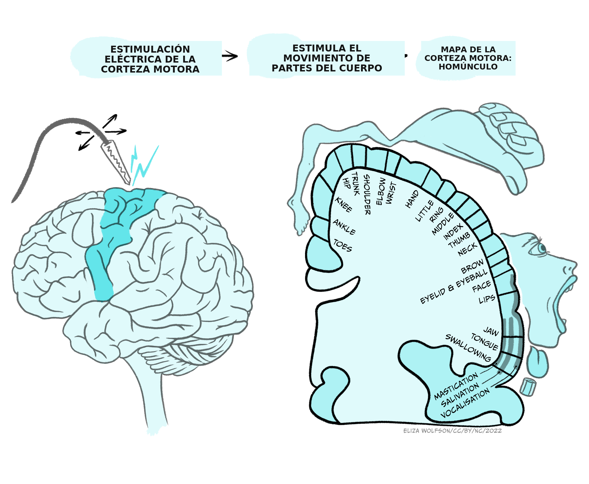
Eso llevó a dibujar un homúnculo, que es una representación topográfica de cómo la corteza motora primaria contiene un mapa motor del cuerpo. Igual que en los mapas sensitivos, las partes del cuerpo no están representadas por igual. Las áreas que necesitan más control motor —las manos, las yemas de los dedos, los labios y la lengua— están controladas por regiones desproporcionadamente más grandes de la corteza motora, en comparación con otras partes del cuerpo.
El homúnculo es una simplificación, y el propio Penfield señaló que las regiones de la cara, del brazo y el tronco, y de la pierna se superponen. Atribuyó eso a la variabilidad del tamaño del encéfalo y a la falta de precisión de la estimulación, pero análisis más recientes mostraron una organización somatotópica fragmentada, en la que se entremezclan neuronas que controlan movimientos de la cara, del brazo y el tronco, y de la pierna. Eso generó una controversia: ¿la corteza primaria controla músculos, o controla el movimiento?
Modelar el movimiento
Un análisis más detallado de la relación entre las áreas corticales motoras primarias y el movimiento que generan ayudó a entender cómo funciona la corteza motora.
Desde el punto de vista anatómico, hay evidencia de que neuronas corticales individuales establecen conexiones directas con neuronas motoras que inervan varios músculos que trabajan juntos (son sinérgicos) para producir un movimiento determinado.
Además, la representación de los dedos se encuentra en varias regiones de la corteza. Eso sugiere que los dedos, que participan en muchísimas acciones, pueden vincularse a tareas particulares y activarse de manera independiente en distintos contextos.
Estas observaciones apuntan a una organización de la corteza motora primaria para controlar el movimiento, y no la contracción de músculos individuales. Distintos grupos de neuronas se agrupan y ofrecen «bibliotecas» de sinergias musculares que pueden usarse para distintos movimientos, o para partes de un movimiento. Por ejemplo, una región de esta corteza va a participar en la activación de los músculos necesarios para tomar una bolita entre el pulgar y el índice.
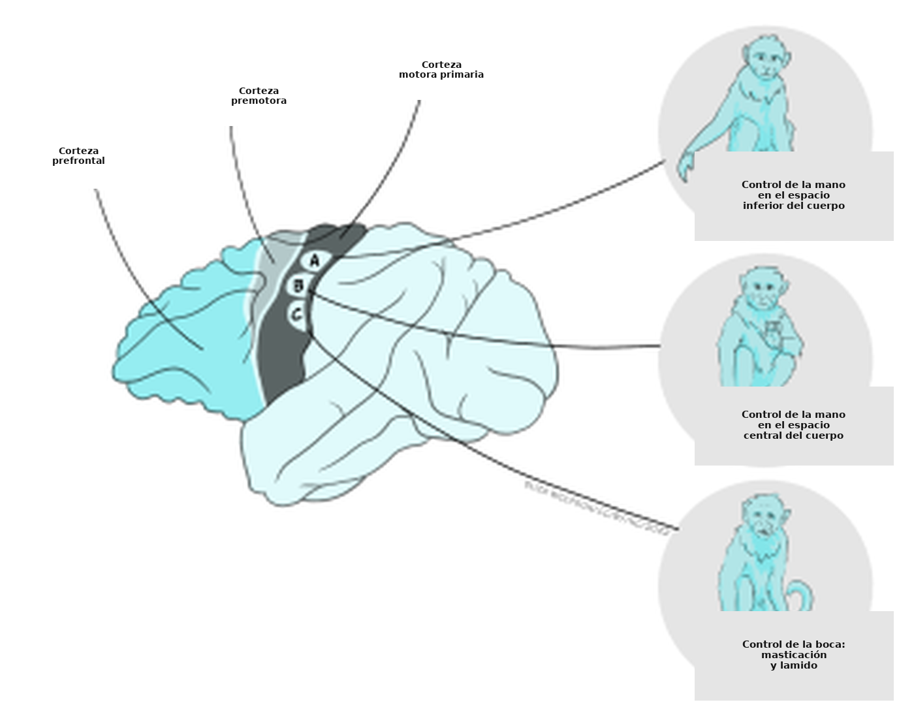
Descubrimientos recientes mostraron que hay una complejidad considerable en los movimientos que puede controlar la corteza motora. Con estimulaciones eléctricas más largas de la corteza motora (medio segundo) en monos macacos, Michael Graziano y sus colegas mostraron que esas estimulaciones pueden evocar acciones complejas (Figura 5.4) (Graziano, 2016). Esas acciones representan movimientos que el mono usa habitualmente (relevantes desde el punto de vista etológico). Por ejemplo, estimular una zona de la corteza motora inducía, de manera repetida y fiable, la acción de llevar la mano a la boca (E). También encontraron sitios que evocaban movimientos aparentemente defensivos (F) o de alcanzar para agarrar (G). Cada tipo de acción relevante desde el punto de vista etológico se organiza en zonas, y las ablaciones de esas zonas afectan la capacidad de generar los movimientos correspondientes. Esta organización zonal de movimientos complejos se denominó mapa de acciones.
Plasticidad de la corteza motora
Las áreas corticales que participan en el control del movimiento (la corteza prefrontal, la corteza premotora y la corteza motora primaria) muestran una plasticidad notable. Eso significa que las conexiones entre neuronas, y su fuerza, pueden cambiar: se forman conexiones nuevas y se deshacen otras.
Eso es particularmente evidente durante el desarrollo, cuando el sistema nervioso es muy maleable y permite la maduración de conductas nuevas, como caminar en la primera infancia. En el ser humano, el mapa motor también cambia con la adquisición de un movimiento habilidoso, como escribir o tocar el violín. Los efectos se estudiaron en detalle en animales. Al principio el mapa motor está ausente, pero, a medida que se aprende la habilidad, el mapa se refina y se vuelve más preciso. Los cambios se centran en las regiones que controlan los músculos involucrados en la habilidad aprendida: cada dedo está controlado por una región muy definida de la corteza motora primaria de quien toca el violín (Elbert et al., 1995).
Esta plasticidad también tiene consecuencias profundas cuando se lesionan las áreas motoras de la corteza. Si un mono lesiona un área motora cortical que controla su pata y no recibe rehabilitación, esa pata queda paralizada. Después de unos meses, un análisis de la corteza motora de ese animal muestra que el área que controla la pata del mono (la muñeca y los dedos) se achicó, mientras que las áreas laterales que controlan el codo y el hombro se agrandaron. Si no se les permite usar la mano sana, por ejemplo con un yeso, se ven obligados a usar la mano afectada. Esa es una forma de rehabilitación: las áreas que controlan la mano y los dedos conservan entonces su tamaño, y el mono conserva cierta capacidad de mover la mano (Nudo et al., 1996).
Estos experimentos, hechos en animales, permitieron desarrollar tratamientos nuevos de rehabilitación para seres humanos. Entre ellos, la terapia de movimiento inducido por restricción ayuda a mejorar el déficit que resulta de distintos tipos de lesión considerable del sistema nervioso central (SNC), como el accidente cerebrovascular (ACV), la lesión cerebral traumática, la esclerosis múltiple, la parálisis cerebral y ciertos trastornos motores pediátricos (Taub, 2012). Por ejemplo, en pacientes con ACV se usó la estimulación magnética transcraneal (EMT) para estimular la corteza motora dañada, o para inhibir la corteza motora intacta del hemisferio opuesto, y así mejorar la función (Ziemann, 2005).
El tracto corticoespinal
La principal vía aferente desde la corteza motora primaria hacia el tronco encefálico y la médula espinal es el tracto corticoespinal. La mayoría de los axones se originan en neuronas piramidales de la capa V de la corteza, pero el tracto también incluye fascículos de la corteza premotora y de la corteza sensitiva. El haz de axones desciende al tronco encefálico, donde envía varias colaterales a núcleos del tronco y se divide en dos ramas principales. El tracto lateral del lado opuesto controla el movimiento de las extremidades y de los dedos del lado opuesto del cuerpo. El tracto del mismo lado controla movimientos más cercanos a la línea media del mismo lado del cuerpo, en particular los movimientos del tronco y de los hombros que influyen en la orientación del cuerpo (Figura 5.5).
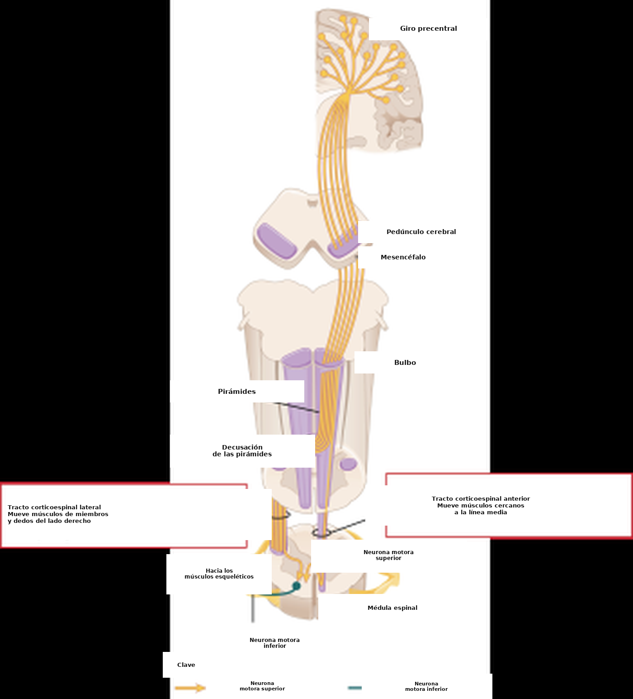
Ideas clave
- El prosencéfalo organiza el inicio del movimiento: la corteza prefrontal planifica, la corteza premotora organiza y la corteza motora envía las órdenes para producir el movimiento.
- La corteza motora primaria contiene un mapa motor del cuerpo: el homúnculo.
- La organización cortical motora representa movimientos simples y movimientos relevantes desde el punto de vista etológico.
- La plasticidad es fundamental para aprender habilidades motoras nuevas y para la rehabilitación.
- El tracto corticoespinal descendente lleva las entradas a los circuitos ejecutivos del tronco encefálico y de la médula espinal.
La médula espinal
La médula espinal cumple una función fundamental en la ejecución del movimiento. Contiene las neuronas motoras responsables de la contracción muscular. Recibe la entrada descendente de regiones superiores del encéfalo y la retroalimentación sensitiva de los músculos y de los receptores del tacto. Genera el movimiento más simple: la contracción refleja. También contiene los circuitos que controlan la generación de movimientos rítmicos, como caminar o masticar. Cuando se lesiona, el movimiento voluntario es imposible por debajo del nivel del daño.
Un corte transversal de la médula espinal (Figura 5.6a) muestra la sustancia blanca externa, que contiene el tracto de axones, y la sustancia gris central, donde se ubican los núcleos de las neuronas de la médula. La sustancia gris se divide en el asta dorsal, que retransmite las entradas sensitivas a la médula espinal y al encéfalo, y el asta ventral, que contiene las neuronas motoras. En la sustancia gris intermedia se encuentran las interneuronas que retransmiten las entradas a las neuronas motoras. La médula espinal se divide en cuatro secciones: cervical, torácica, lumbar y sacra, cada una formada por varios segmentos (Figura 5.6b, imagen de la izquierda). Los músculos de las extremidades reciben nervios de varios segmentos, lo que refleja la complejidad del movimiento que se genera.
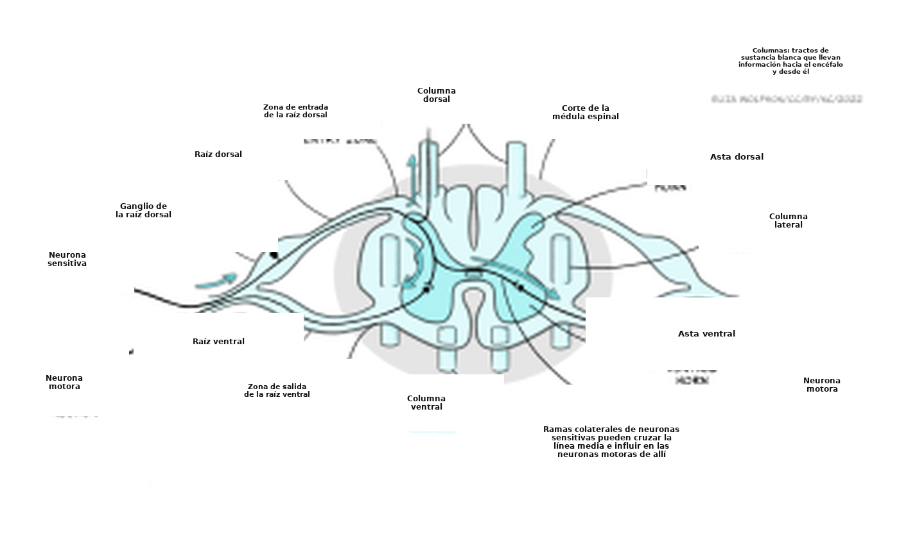

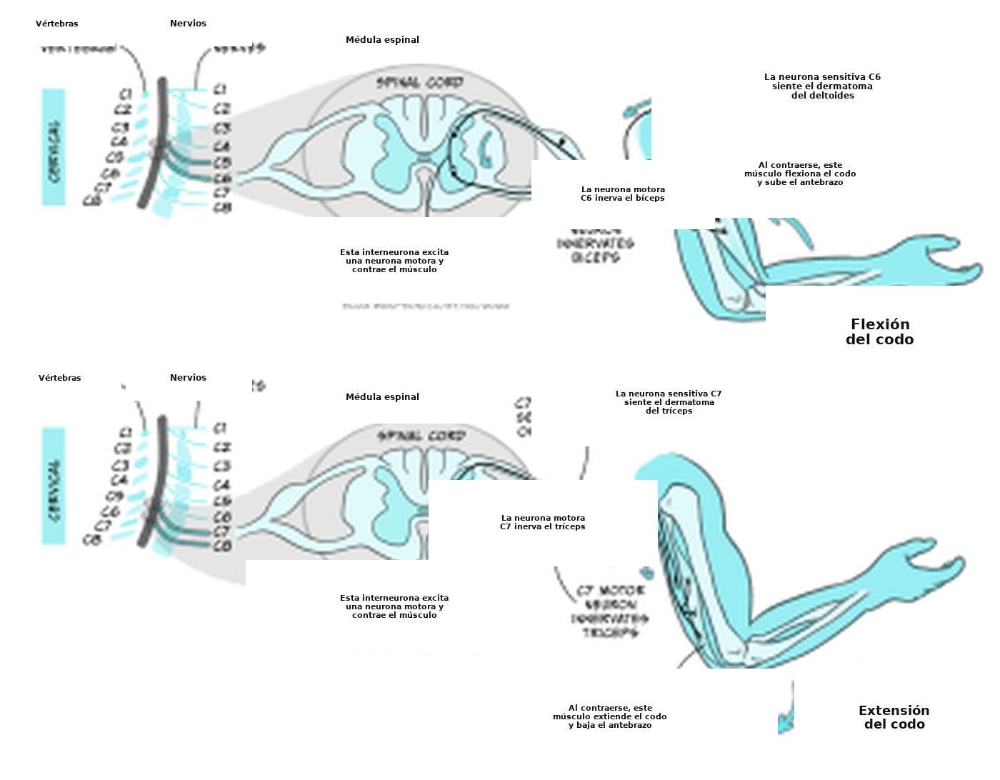
El brazo se mueve gracias a la estimulación coordinada de neuronas motoras que impulsan la contracción de los músculos extensores y flexores.
Por ejemplo, la flexión del codo está mediada por los segmentos cervicales C5 y C6, mientras que su extensión está mediada por C7 y C8 (Figura 5.7). Las entradas sensitivas de una sola franja de piel llegan por nervios espinales individuales, lo que refleja la importancia de la sensación localizada.
Las neuronas motoras
Las neuronas motoras son los elementos de salida finales del sistema motor. Cada neurona motora inerva hasta 150 fibras de un solo músculo (Figura 5.8a). Ese conjunto de fibras inervadas por una sola neurona motora constituye la unidad más pequeña de contracción, y sir Charles Sherrington la llamó «unidad motora» (Nobel Lecture, 12 de diciembre de 1932). La mayoría de los músculos comprenden cientos de unidades motoras.
Al controlar la actividad de cada neurona motora, y el número y el tipo de unidades motoras que se reclutan, se pueden ajustar el tipo de movimiento y la fuerza muscular (Figura 5.8b).
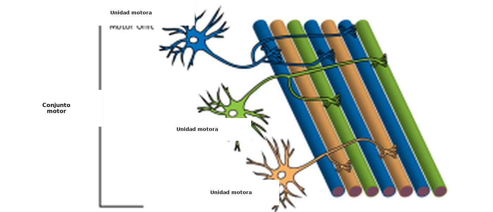
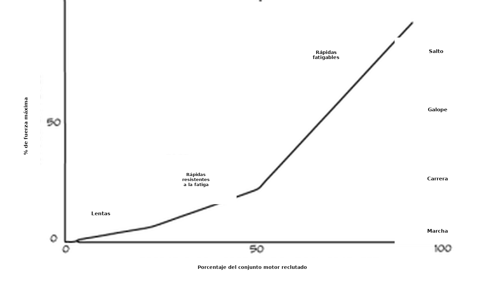
Existen tres tipos de unidades motoras:
- Las neuronas motoras lentas generan una tensión baja y sostenida, y se reclutan primero. Aportan fuerza suficiente para estar de pie o para los movimientos lentos.
- Las unidades rápidas generan más fuerza y se reclutan para una actividad más intensa. Las unidades rápidas resistentes a la fatiga aportan fuerza para una actividad intermedia, como caminar o correr.
- Por último, cuando se hacen movimientos intensos, como saltar, se reclutan las unidades rápidas fatigables.
La fuerza de contracción de cada unidad motora también puede modularse cambiando la frecuencia de descarga de las neuronas motoras en la unión neuromuscular (UNM).
La unión neuromuscular
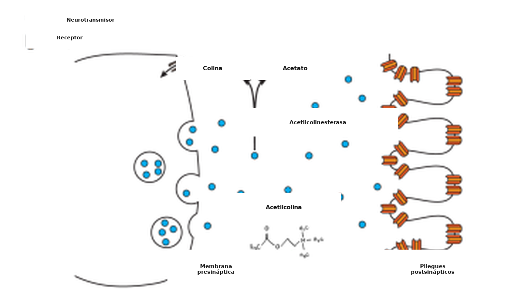
La unión neuromuscular (UNM) es la conexión sináptica química entre el extremo terminal de una neurona motora y un músculo (Figura 5.9). Permite que la neurona motora transmita una señal a la fibra muscular y, así, se produzca la contracción. Empieza cuando un potencial de acción llega al terminal axónico de la neurona motora. En los vertebrados, el neurotransmisor acetilcolina (ACh) se libera del terminal axónico y se difunde por la hendidura sináptica, donde se une a los receptores nicotínicos de acetilcolina (nAChR) del sitio postsináptico de la fibra muscular. Los nAChR son canales iónicos activados por ligando. La unión de la ACh abre el canal iónico y permite que entren iones Na+ en la célula muscular, lo que despolariza la membrana. En el músculo, esa despolarización se denomina «potencial de placa» (a diferencia del potencial postsináptico excitatorio, PPSE, de una sinapsis entre neuronas). Ese potencial de placa causa un potencial de acción en la fibra muscular que, finalmente, produce la contracción. Para evitar que el músculo se contraiga de manera sostenida, la ACh se degrada en la UNM por la acetilcolinesterasa.
La UNM es el sitio de muchas enfermedades que afectan el modo en que los mensajes se transmiten de los nervios a los músculos. Por ejemplo, en el síndrome miasténico congénito están mutadas proteínas necesarias para la transmisión sináptica en la UNM, de modo que un potencial de acción en una neurona motora tiene menos capacidad de causar la contracción muscular. Esta afección produce debilidad muscular y repercute en la movilidad en distintos grados, según el tipo de mutación genética. Los síntomas van desde la caída de los párpados y la fatiga hasta la alteración de la respiración y de otras funciones esenciales en las formas de la enfermedad que ponen en riesgo la vida. Cómo modular la eficacia de la transmisión en la UNM es un área de investigación muy activa para ayudar a los pacientes con este síndrome.
Generación de movimientos rítmicos
Como ya se comentó, la médula espinal no es solo un sitio de relevo del encéfalo hacia los músculos: también cumple una función fundamental en la generación de patrones rítmicos de movimiento, como caminar o correr. Eso significa que los circuitos situados en la médula pueden coordinar las acciones concertadas de varios músculos. Hace más de cien años, Charles Sherrington (1910) y Graham Brown (1911) hicieron los primeros experimentos que mostraron que la médula espinal, desconectada del encéfalo, podía producir el movimiento rítmico del paso en gatos. Después de años de controversia y de experimentación en muchas especies, hoy se acepta que la médula espinal contiene circuitos que generan movimientos rítmicos, como masticar o caminar, con independencia de las entradas que recibe. Esos circuitos de interneuronas se llaman generadores centrales de patrones (GCP; central pattern generators, CPG, en inglés) y aseguran la acción coordinada de los músculos, de modo que extensores y flexores trabajen en conjunto para producir movimientos fluidos (Figura 5.7).
Aunque los GCP pueden generar movimientos rítmicos, necesitan entradas premotoras que seleccionen y coordinen los tipos de neuronas motoras necesarios. Por ejemplo, caminar y correr exigen la contracción de los músculos de las piernas en fases distintas y con intensidades distintas. Durante la marcha, la duración del apoyo es mayor y las piernas están menos flexionadas que al correr (Figura 5.10). La actividad del GCP que controla el momento y la coordinación de la contracción muscular está influida por entradas descendentes de centros superiores (sobre todo la corteza motora primaria), que envían la señal para elegir entre distintas marchas. Además, la retroalimentación sensitiva de los músculos (la propiocepción) y del entorno da forma a la ejecución correcta de los movimientos (Figura 5.10b, abajo).
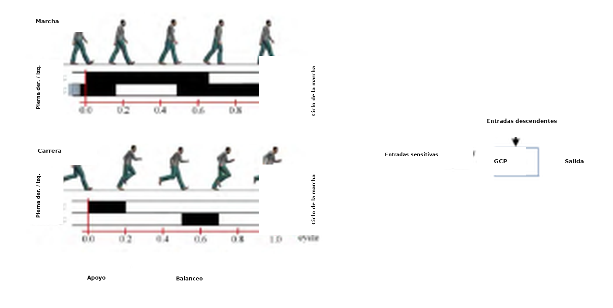
Lesión de la médula espinal
Comprender la importancia de los circuitos situados en la médula espinal sirve para ayudar a los pacientes con una lesión medular. Cuando la médula se secciona, el circuito que queda por debajo del sitio de la lesión no puede activarse. Cuando la lesión ocurre a nivel lumbar (C4-C6), los brazos y las piernas quedan paralizados, y el resultado es una cuadriplejia. Si la lesión es a nivel torácico, las piernas quedan paralizadas, y el resultado es una paraplejia (véase la Figura 5.6c).
Sin embargo, es posible mejorar la recuperación de la locomoción con el entrenamiento. Durante el entrenamiento del paso (Figura 5.11), el peso del cuerpo del paciente se sostiene con un arnés sobre una cinta. Terapeutas y técnicos mueven las piernas y las articulaciones del paciente para simular la marcha normal. A medida que el paciente camina, las entradas sensitivas de las piernas, de la planta del pie y del tronco se envían de manera repetida a la médula espinal. Eso entrena el circuito medular, y caminar y estar de pie se reaprenden poco a poco. Después de varias semanas de entrenamiento, la mayoría de los pacientes puede generar una marcha espontánea cuando se los coloca en la cinta con apoyo. Eso mejora la salud y el bienestar. Cuando la lesión medular es incompleta, puede ser el comienzo de la recuperación, porque también estimula la reorganización de las entradas descendentes que vienen del encéfalo.
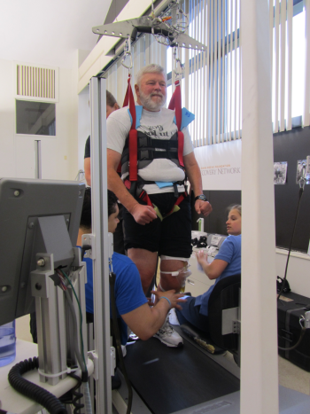
Mirá también el video Locomotor Training en YouTube: https://www.youtube.com/watch?v=diZLK32DUts
Ideas clave
- La médula espinal tiene una estructura organizada.
- La conexión entre una neurona motora y varias fibras musculares constituye una unidad motora, la unidad más pequeña de salida motora. Cada músculo contiene muchas unidades motoras.
- La actividad y el reclutamiento de las unidades motoras influyen en la salida motora.
- La unión neuromuscular es la sinapsis colinérgica entre la neurona motora y el músculo.
- La médula espinal tiene circuitos neurales capaces de generar movimientos rítmicos, como caminar y masticar.
- Entrenar los circuitos medulares tiene un efecto beneficioso en el tratamiento de los pacientes con lesión de la médula espinal.
El cerebelo y el control del movimiento habilidoso
El cerebelo comprende entre el 10 y el 20 % del volumen del encéfalo, pero contiene el 50 % de sus neuronas. Esa disparidad es posible porque el cerebelo es una estructura muy organizada, que permite el empaquetamiento denso de las neuronas. Está situado en la parte posterior del encéfalo, justo por encima del tronco encefálico. El cerebelo se divide en varias regiones, cada una con funciones específicas y con conexiones a distintas partes del encéfalo (Figura 5.12).
El cerebelo contiene componentes sensitivos y motores, pero no es necesario para la ejecución directa del movimiento. Más bien participa en la coordinación y la planificación del movimiento, que se alteran en los pacientes con lesiones cerebelosas.
La primera idea sobre la función del cerebelo la obtuvo el neurólogo Gordon Holmes (Holmes, 1922). Después de la Primera Guerra Mundial, analizó la conducta de soldados que habían sido heridos por balas y presentaban un daño localizado en el cerebelo. Observó que, aunque no había pérdida sensitiva, el movimiento de los pacientes estaba afectado: presentaban ataxia cerebelosa (falta de coordinación).
Los pacientes presentaban debilidad (hipotonía), mostraban desplazamientos inapropiados, como pasarse del objetivo (dismetría), y les costaba hacer movimientos alternados rápidos (disdiadococinesia). Sus movimientos parecían descompuestos, con falta de coordinación entre distintas articulaciones.
Todos estos defectos apuntaban a una función del cerebelo en la construcción del movimiento, con una contribución a la coordinación, la escala, el momento y la precisión.
Un dato interesante: uno de los pacientes de Holmes describió que «la lesión cerebelosa significaba que era como si cada movimiento se estuviera haciendo por primera vez» (Holmes, 1922). Esta y otras observaciones llevaron a la idea actual de que el cerebelo permite elaborar órdenes motoras predictivas. Eso significa que, a lo largo de repeticiones de un movimiento —por ejemplo, pegarle a una pelota de tenis con una raqueta—, se aprende un modelo interno del movimiento: un programa motor. La próxima vez que quieras pegarle a la pelota, esa representación cerebelosa se usa para generar y construir los movimientos apropiados en respuesta a las entradas sensitivas recibidas, y el golpe se vuelve cada vez más preciso y más «automatizado» (recordá el control anticipatorio del movimiento).
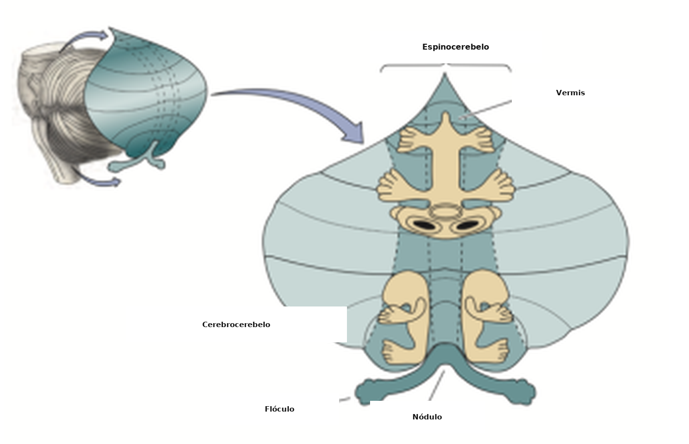
La coordinación del movimiento por el cerebelo es posible gracias a su alta interconectividad. Recibe entradas sobre los movimientos planificados desde la corteza motora, y retroalimentación sensitiva sobre el movimiento real. Eso permite comparar el desempeño planificado del movimiento con el desempeño real. Produce un cálculo preciso que usa la información sensitiva para ajustar el movimiento en curso, como parte de un sistema de control predictivo anticipatorio.
Ideas clave
- El cerebelo participa en la construcción del movimiento. Las lesiones cerebelosas afectan el movimiento de manera drástica, porque el momento, la escala y el patrón de las contracciones musculares son inapropiados.
- El cerebelo es importante para traducir las señales «sensitivas» a coordenadas «motoras», como parte de un sistema de control predictivo anticipatorio.
- También influye en el aprendizaje motor y contribuye a la automatización de los movimientos.
Núcleos basales
Los núcleos basales —también llamados ganglios basales— son estructuras que modulan la función motora en los niveles más altos. Reciben conexiones extensas de la neocorteza y retroalimentan a la corteza motora. Los núcleos basales participan en una amplia gama de funciones, entre ellas la selección de acciones, el aprendizaje de asociaciones y de hábitos, la motivación, las emociones y el control motor. En este capítulo vamos a ver su organización funcional y a centrarnos en el mecanismo por el cual permiten seleccionar el movimiento y modular la fuerza del movimiento.
Los núcleos basales son cinco núcleos interconectados dentro del prosencéfalo, situados por debajo de la corteza cerebral. Los núcleos principales son el estriado (que significa «con estrías»), formado por el putamen, los núcleos caudados y el globo pálido. Y dos núcleos del mesencéfalo: la sustancia negra y el núcleo subtalámico (Figura 5.13).
Los núcleos reciben entradas de todas las áreas de la neocorteza, incluida la corteza motora, y también entradas de las áreas límbicas, que participan en emociones como el miedo. Los núcleos proyectan de vuelta a la corteza motora por medio de relevos en el tálamo, e influyen en las órdenes descendentes de la corteza motora primaria. No hay conexiones directas de los núcleos basales con la médula espinal.
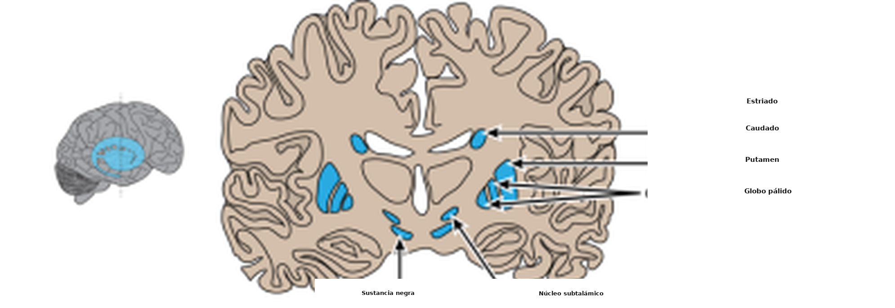
Organización funcional de la red: la hipótesis del volumen
En la teoría del control de volumen, el globo pálido actúa como un dial de volumen. Proyecta de manera indirecta a la corteza motora a través del tálamo. El globo pálido es inhibitorio: eso significa que, cuando se activa, inhibe el tálamo. Si eso ocurre, el tálamo, que es excitatorio, no activa la corteza motora, y el resultado es menos movimiento. Por otro lado, si se inhibe el globo pálido interno, se libera la inhibición sobre el tálamo y el movimiento puede ocurrir. Este modelo sugiere que, por medio de este «control de volumen», elegimos y seleccionamos objetivos apropiados, y descartamos las opciones menos óptimas.
En este esquema de la organización funcional de los núcleos basales, las vías hacia el globo pálido interno son decisivas para fijar su salida. Hay una vía directa y una vía indirecta.
La vía directa
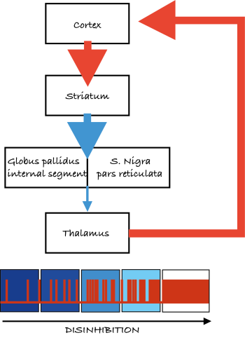
En la vía directa (Figura 5.14a), el estriado (caudado/putamen) está conectado directamente con el globo pálido interno y la sustancia negra. Si se activa la vía directa, inhibe el globo pálido interno y, así, retira la inhibición del tálamo. Eso facilita el movimiento porque aumenta la excitación talámica de la corteza motora.
El azul es inhibitorio, el rojo es excitatorio y el grosor de la línea indica la fuerza de las conexiones.
La vía indirecta
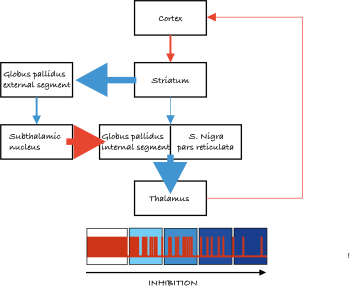
En la vía indirecta (Figura 5.14b), el estriado proyecta al globo pálido externo y al núcleo subtalámico.
El estriado inhibe el globo pálido externo. Eso desinhibe el núcleo subtalámico, que excita el globo pálido interno. El resultado es menos excitación de la corteza motora.
La dopamina también participa en la modulación de los movimientos. Las entradas dopaminérgicas a los núcleos basales desde la sustancia negra pars compacta facilitan el movimiento tanto por la vía directa como por la indirecta. En la vía directa, la activación de los receptores de dopamina D1 en neuronas del estriado refuerza la inhibición estriatal del globo pálido interno, desinhibe el tálamo y facilita las salidas motoras. A la inversa, en la vía indirecta la dopamina activa receptores de dopamina D2 en el globo pálido externo para reducir su inhibición. El globo pálido externo puede, entonces, inhibir con más fuerza el núcleo subtalámico, lo que reduce la excitación del globo pálido interno y disminuye la inhibición del tálamo, y así facilita todavía más las salidas motoras.
En conjunto, el equilibrio entre las vías directa e indirecta controla el «dial de volumen» que determina la fuerza de la salida de los núcleos basales hacia el tálamo y, así, modula la entrada excitatoria que recibe la corteza motora para seleccionar y regular el movimiento.
Enfermedades de los núcleos basales
El daño de los núcleos basales puede producir dos tipos principales de síntomas motores:
- Síntomas hipercinéticos, en los que hay un movimiento involuntario excesivo, como se ve en la corea de Huntington.
- Síntomas hipocinéticos, en los que hay escasez de movimiento, como se ve en la enfermedad de Parkinson.
La enfermedad de Huntington es un trastorno genético caracterizado por movimientos no controlados (corea). Los síntomas son movimientos espontáneos excesivos, de ritmo irregular, distribuidos al azar y de carácter abrupto. Le siguen la demencia y, por último, la muerte.
Hay evidencia de que los síntomas motores se originan en la muerte neuronal, que puede llegar al 90 % en el estriado (caudado/putamen). Eso altera sobre todo la vía indirecta, en la que se pierde la inhibición del globo pálido externo y se produce una inhibición tónica del núcleo subtalámico. Eso, a su vez, reduce la salida inhibitoria hacia el tálamo y, así, produce un movimiento excesivo.
Los síntomas pueden tratarse con antipsicóticos que bloquean la transmisión dopaminérgica (por ejemplo, la clozapina) y disminuyen la actividad motora, y también con ansiolíticos o anticonvulsivantes que aumentan la inhibición por medio del GABA (por ejemplo, el clonazepam).
La enfermedad de Parkinson es un trastorno progresivo lento que afecta el movimiento, el control muscular y el equilibrio. Tiene tres síntomas principales: temblor de reposo, músculos rígidos y lentitud del movimiento, que produce pasos pequeños y arrastrados.
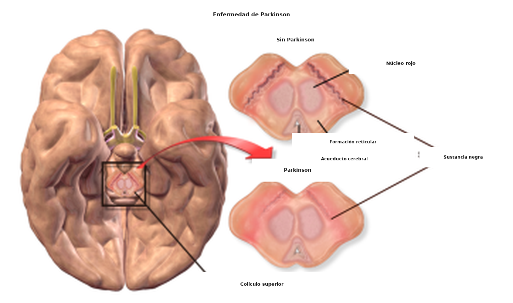
La produce una pérdida de neuronas dopaminérgicas en la sustancia negra, y los niveles de dopamina en sus regiones de salida se reducen de manera drástica (Figura 5.15).
En condiciones normales, la dopamina facilita el movimiento. Cuando los niveles disminuyen, se afectan tanto la vía directa como la indirecta, aumenta la salida inhibitoria de los núcleos basales y se reduce la actividad motora.
El tratamiento farmacológico de la enfermedad de Parkinson se centra, en gran medida, en restaurar los niveles de dopamina. La dopamina no puede administrarse directamente, porque no cruza la barrera hematoencefálica y, por lo tanto, no llega al encéfalo cuando se administra por vía sistémica. En su lugar se usa el precursor de la dopamina, la L-DOPA, que el encéfalo capta y que se vuelve activa al convertirse en dopamina por la dopadescarboxilasa. También se usaron agonistas de los receptores de dopamina, o inhibidores de la degradación de la dopamina. Estos tratamientos son beneficiosos, pero exigen aumentos graduales de la dosis con el tiempo, y eso puede generar muchos efectos adversos.
Como alternativa, se introdujo la estimulación del núcleo subtalámico o del globo pálido interno mediante electrodos implantados («estimulación cerebral profunda») como tratamiento de la enfermedad de Parkinson. Este tratamiento puede ayudar a aliviar los síntomas, pero no está claro si lo hace inhibiendo, excitando o, de un modo más amplio, alterando el flujo anormal de información por las vías directa e indirecta (Chiken & Nambu, 2016).
Mirá el video de YouTube «Medtronics Deep Brain Stimulation Patient»: https://www.youtube.com/watch?v=_tkmSn2m0Ck
Ideas clave
- Los núcleos basales contribuyen al control motor de alto nivel.
- Las entradas a los núcleos basales provienen de muchas regiones de la corteza cerebral, y las salidas se dirigen al lóbulo frontal.
- Los trastornos de los núcleos basales implican un movimiento limitado o excesivo, como lo ejemplifican el parkinsonismo y la corea, respectivamente.
- Los núcleos basales también tienen funciones importantes que no son motoras.
Referencias
Brown, T. G. (1911). The intrinsic factors in the act of progression in the mammal. The Proceedings of the Royal Society B, 84(572), 308-319. https://doi.org/10.1098/rspb.1911.0077
Chiken, S., & Nambu, A. (2016). Mechanism of deep brain stimulation: Inhibition, excitation, or disruption? The Neuroscientist, 22(3), 313-322. https://doi.org/10.1177/1073858415581986
Elbert, T., Pantev, C., Wienbruch, C., Rockstroh, B., & Taub, E. (1995). Increased cortical representation of the fingers of the left hand in string players. Science, 270(5234), 305-307. https://doi.org/ 10.1126/science.270.5234.30
Filh P., & Thomas B. (2010). Recognizing human gait types. In Ude, A. (Ed.), Robot Vision (pp. 183-208). InTech Open. https://doi.org/10.5772/9293
Graziano, M. S. A. (2016). Ethological action maps: a paradigm shift for the motor cortex. Trends in Cognitive Sciences, 20(2), 121-132. https://doi.org/10.1016/j.tics.2015.10.008
Holmes, G. (1922). The Croonian lectures on the clinical symptoms of cerebellar disease and their interpretation. Lecture I. The Lancet, 199(5155), 1177-1182. https://doi.org/10.1016/S0140-6736(00)55081-8
Holmes, G. (1922). The Croonian lectures on the clinical symptoms of cerebellar disease and their interpretation. Lecture II. The Lancet, 199(5156), 1231-1237. https://doi.org/10.1016/S0140-6736(01)33076-3
Kandel E., Schwartz, J., & Jessell, T. (2012) Principles of neural science (5th Ed.). McGraw-Hill Education.
Kleim, J. A., Hogg, T. M., VandenBerg, P. M., Cooper, N. R., Bruneau, R., & Remple, M. (2004). Cortical synaptogenesis and motor map reorganization occur during late, but not early, phase of motor skill learning. Journal of Neuroscience, 24(3), 628-633. https://doi.org/10.1523/JNEUROSCI.3440-03.2004
Kolb, B., Whishaw, I. Q., & Teskey, G. C. (2019). An introduction to brain and behavior (6th ed.). Macmillan Learning.
Nudo, R. J., Wise, B. M., SiFuentes, F., & Milliken, G. W. (1996). Neural substrates for the effects of rehabilitative training on motor recovery after ischemic infarct. Science, 272(5269), 1791-1794. https://doi.org/10.1126/science.272.5269.1791
Penfield, W., & Boldrey, E. (1937). Somatic motor and sensory representation in the cerebral cortex of man as studied by electrical stimulation. Brain, 60(4), 389-443. https://doi.org/10.1093/brain/60.4.389
Sherrington, C. S. (1910). Flexion-reflex of the limb, crossed extension-reflex, and reflex stepping and standing. The Journal of Physiology, 40(1-2), 28-121. https://doi.org/10.1113/jphysiol.1910.sp001362
Sherrington, C. S. (1932). Inhibition as a coordinative factor. Nobel Lecture. https://www.nobelprize.org/prizes/medicine/1932/sherrington/lecture/
Taub, E. (2012). The behavior-analytic origins of constraint-induced movement therapy: An example of behavioral neurorehabilitation. The Behavior Analyst, 35, 155–178. https://doi.org/10.1007/BF03392276
Ziemann, U. (2005). Improving disability in stroke with RTMS. The Lancet Neurology, 4(8), 454-455. https://doi.org/10.1016/S1474-4422(05)70126-5